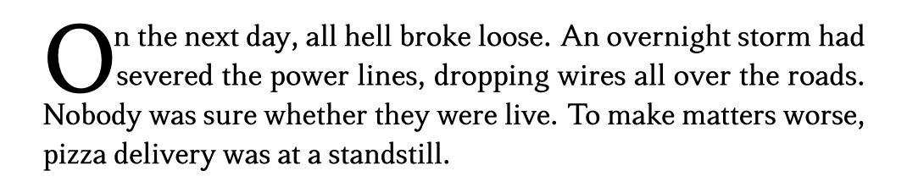
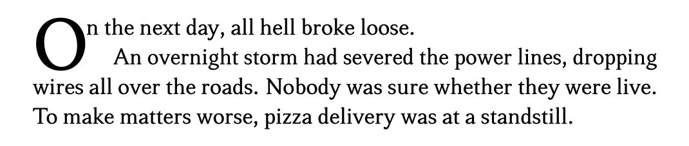

Novelette Documentation
 Home Tutorial Document Body Components
Home Tutorial Document Body Components
 Index
Index
Main Text
Overview
Every component environment starts with a display zone. The zone may be empty, or occupy the entire component, or anywhere in between.
In most cases, such as new chapters, you end the zone somewhere in the middle of the component's first page.
Command: \maintext
 TOP
TOP
The \maintext command ends the display zone. Then:
One or two blank lines are automatically inserted above
\maintext.The display content is usually off‑grid, due to style scaling. Novelette applies whatever vertical space is needed, to restore the following text to grid.
\styleNcommands are no longr available.A block environment may not use small text.
Except in front matter and back matter, images may float.
The
\init,\dcap, and\scenecommands are available.
Guide Marker
TOP
If you use a guide marker, the first line of main text is not forced to align with the guide. Whether or not it aligns, is your decision; Novelette does not care.
Use \blankline or \vspace within the display zone,
to adjust its height. Always measure \vspace with units
of \baselineskip, not pt, like this:
Good: \vspace{2.3\baselineskip}. Bad: \vspace{10pt}.
Initial Letter: \init
TOP
When main text is the start of a chapter, most book designs apply a special style to its
first letter. Novelette has \init{letter}[more text] for that purpose.
It styles its letter with the main font, but at double the normal size. The baseline
is the same as normal baseline, so the top of letter rises above the other text on
the first line. Optional (recommended) more text is a few letters or words that will be
printed with lowercase to small caps.
This command may only be used at the very start of main text, immediately after the
\maintext command. If you place anything (even (\blankline)
between \maintext and the \init or \dcap, then the
code will fail.
\init{letter}[more] also starred \init* usage:
-
Code such as
\'Eis treated as a single letter. -
If the text begins with quotation marks, guillemets, or Spanish inverted marks, place them within the command, along with the first letter. The punctuation will be automatically adjusted for best appearance.
-
Except for Dutch IJ, avoid using more than one letter. But Novelette does not enforce this rule.
-
If the initial letter is a word in itself (such as English I), put the space within the braces, next to the letter.
-
[more text]prints its text with lowercase letters in small caps. This is desirable. The text should be only a few letters or words. It cannot extend all the way to the right margin.\init{I}[t was dark.] The heavy gloom...In the above example, note that
Iis not repeated in small caps, because it is already printed as the initial letter. -
\initautomatically kerns the initial letter, so that there is not a large gap to whatever follows. If that is too tight for you, the starred\init*provides a little more room.If you need to manually kern after the initial letter, write the
\kernor\skcommand inside the braces, immediately following the initial letter. Do not write it at the start of[more text].
Drop Cap: \dcap
TOP
Instead of \init, you may use a drop cap for the first letter of main text.
This is an enlarged letter occupying the first two lines, with other text wrapped around it.
Popular fiction almost never uses drop caps. They only look good when the opening paragraphs have enough lines to surround them, without excessive white space. But popular fiction usually has short paragraphs (sometimes one line), dialog with punctuation, and other text that interferes with good-looking drop caps.
If you use \dcap, it must immediately follow \maintext.
Prefer \init. Most actual books do it this way. But if you
are determined to use drop caps, here is how:
\dcap{letter}, \dcap*{letter}
-
This prints the letter as a "drop cap".
-
Do not place punctuation. If necessary, re-write your text, so that the sentence does not begin with quotation marks, guillemets, or Spanish inverted marks. Or, omit the marks there. If you cannot do that consistently, then avoid drop caps.
-
Code such as
\'Eis treated as a single letter. -
The drop cap occupies two lines. No more, no less.
-
The top of the letter (without diacritical) is at the top of normal uppercase in the first line. The baseline of the letter is at the baseline of the second normal line.
-
If a diacritical is above the letter, it will appear higher.
-
Letters J, Q, and Ccedilla are specially shaped to fit.
-
Unstarred
\dcapspaces both lines equally (they vertically align) whether or not the drop cap is a one-letter word. Starred\dcap*affects the first line; it brings the immediately following text closer to the drop cap. But if the drop cap is a one-letter word, a space restores vertical alignment. -
If the first paragraph occupies only one line, do not end it with
\par. Use\fakeparinstead.
Example 1:
\dcap*{O}n the next day, all hell broke loose. An overnight storm had severed the power lines,
dropping wires all over the roads. Nobody was sure whether they were live. To make matters worse,
pizza delivery was at a standstill.\par
Result 1:

Example 2:
\dcap*{O}n the next day, all hell broke loose.\fakepar An overnight storm had severed the
power lines, dropping wires all over the roads. Nobody was sure whether they were live.
To make matters worse, pizza delivery was at a standstill.\par
Result 2:

Scenes
TOP
In general, use \blankline one or more times, to separate scenes. Do not use
\null.
If the blank line happens to fall at the last or first line of a page, use
\dinkus instead. Yes, that is its name in typography. It prints three spaced
asterisks, so that the gap is more noticeable. You may also use \dinkus as the
standard scene separator. For a larger gap, write \blankline
above and/or below a dinkus.
You may use \image[scene]{filename} to place a specially-formatted
image. See the graphics page for details.
This method is especially well-suited for chapters (or long stories) that consist of
distinct episodes.
Novelette provides the \scene{text} command. The text must fit on one line,
and not exceed the textblock width, less two normal paragraph indents. The appearance of
this text is set by \scenestyle in preamble.
There are no local options, but you may place a \blankline above and/or below.
Scenes are not numbered automatically. If your scenes need numbers, use the placeholder
\next command, until you know their numbers.
When you use \blankline, \dinkus, \scene{text},
or \image[scene]{filename}, the following paragraph is not indented.
This is standard book design.
TOP